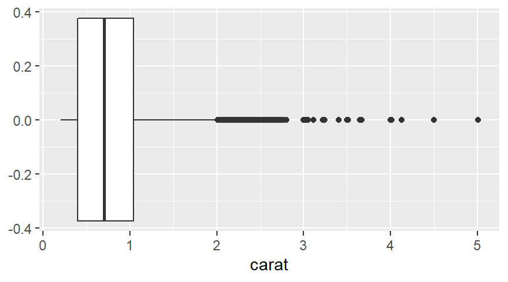
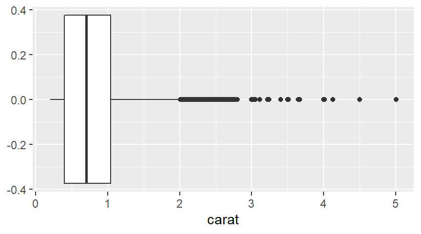
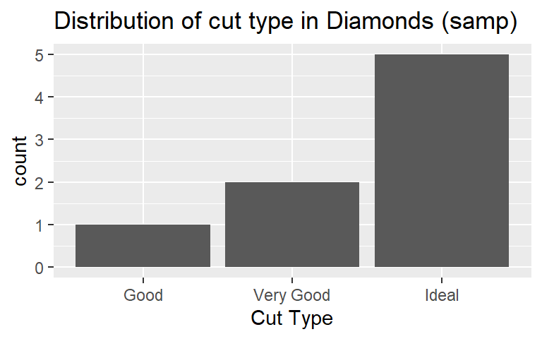
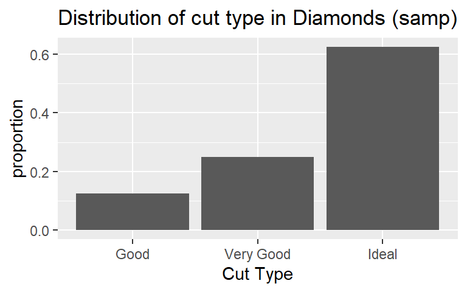
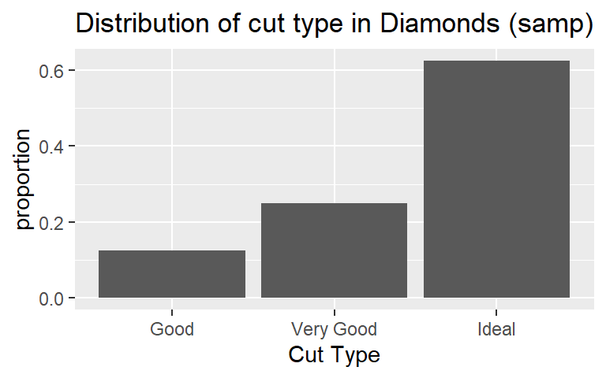

Descriptive Statistics for Numerical and Categorical Data
Workbook Objectives: This workbook covers the following objectives.
- Compute and discuss appropriate summaries for both numerical and categorical data
- Regarding numerical variables, discuss the difference between mean and median as well as standard deviation and inter-quartile range. Identify when each measure is appropriate.
- Compute summary statistics both by hand and with the use of \(\tt{R}\)
Important Reminders: The following previously mastered material is necessary for success through this workbook
- A variable is numerical if a summary statistic such as the mean has a meaningful interpretation.
- A variable is categorical if it serves to sort observations into different groups (categories).
- The unique values which a variable takes are called the levels of that variable.
Summarizing Numerical (Quantitative) Data
Recall: Variables for which computation of measures like the mean (average) or standard deviation are meaningful are numerical variables.
Measuring Central Tendancy
Measures of Central Tendancy (Averages): The mean and median both attempt to measure the center of a dataset.
- The mean of a set of observations is the traditional average. We typically denote the mean by \(\bar{x}\) (or \(\mu\) in the case of population-level data) and it is computed as follows: \[\bar{x} = \frac{\displaystyle{\sum_{i=1}^{n}{x_i}}}{n} = \frac{x_1+x_2+x_3+...+x_n}{n}\]
- The median is the middle value for a set of observations. To compute the median, list the numbers in ascending order and find the number or number(s) in the middle of the list. In the case that there is a single middle number, that is the median. In the case where there are two middle numbers, we take the average of the two.
- Use the code block below to compute the mean of
Sample_One
grade_result(
pass_if(~ (abs(.result - mean(samples$Sample_One)) < 0.005))
)In R we can easily compute the means and medians for our samples or for the entire dataset! Remember from our most recent workbook that the $ operator can be used to access an entire column of a data frame. I’ve stored the samples in a data frame called samples. R includes a function mean() for computing the mean of a list of numbers and a function median() for computing the median. This means that we could compute the mean of Sample_Two using mean(samples$Sample_Two).
- Use the code block below so that it computes the mean of
Sample_Threeusing the$operator to access theSample_Threecolumn of thesamplesdata frame.
mean(samples$Sample_Three)grade_code()- Use the
median()function and the code block below to compute the median of each of the samples and then answer the question that follows.
- In our first workbook we saw that we can use sample data to make generalizations about populations for which the sample is representative. Answer the following questions with this in mind. Quiz
Aside: Defining my own data
For data which is not already known to R (ie. data which is not part of a data frame), we can still use R to quickly perform compuations. Consider the distributions of doors knocked on by two political campaign workers last week (Monday - Friday): \(\begin{array}{lcl} \text{Worker A} & : & 23,~24,~25,~26,~27\\ \text{Worker B:} & : & 0,~15,~25,~35,~50\end{array}\). We do this below with the help of the c() function in R, which can be used to create lists of values.
The following code block finds the mean and median for Worker A – execute the code block to find the mean and median. Once you’ve done this for Worker A, adapt the code so that it finds the mean and median for Worker B.
mean(c(23, 24, 25, 26, 27))
median(c(23, 24, 25, 26, 27))mean(c(0, 15, 25, 35, 50))
median(c(0, 15, 25, 35, 50))grade_code()- Use your explorations of the means and medians for the poll workers to answer the following question.
Measuring Spread
Measures of Variability: Clearly, the center of a dataset doesn’t tell the entire story. Our two political workers’ clearly have very different door-knocking strategies but both have a mean (and median) of \(25\) doors per day. We should also measure the spread of data.
The standard deviation of a set of observations is denoted by \(s\) (or \(\sigma\) in the case of population-level data) and is computed as follows: \[s = \sqrt{\frac{\displaystyle{\sum_{i=1}^{n}{\left(x_i-\bar{x}\right)^2}}}{n-1}}\]
We should also note that if you are certain that you are working with population-level data, then the denominator used to compute the standard deviation should be changed to \(N\) (the population size). We can do this because there is no uncertainty in estimating the population standard deviation if we have records from every element of the population.
Explaining the Standard Deviation Formula: The standard deviation seeks to measure an *“average” deviation" from the mean.
- If we don’t look too closely at the formula, we can see the summation symbol \(\left(\sum\right)\) as well as division (by just about the number of values we’ve added up). That’s almost like an average!
- What are we averaging? The quantity \(\left(x - \bar{x}\right)\) denotes an observed value’s deviation from the mean. We shouldn’t average these values though, since the mean sits in center of the data and we would have deviations above the mean (positive) “cancelling out” deviations below the mean (negative).
- We square the deviations which has two effects: (1) all of the squared deviations are now non-negative, so that no cancellation can occur, and (2) large deviations from the mean carry a larger weight in measuring the standard deviation.
- Since we squared the deviations before computing the “average”, the units of measure are no longer comparable to the original units that the variable was measured in – the units are square units now. This is why we see the large square root as the last piece of the formula – taking the square root brings us back to the original units.
The inter-quartile range (IQR) of a set of observations measures the spread of the “middle-50-percent” of the observations. The IQR is the distance between \(Q1\) (the 25th percentile) and \(Q3\) (the 75th percentile). * The median of a set of observations splits the set into two halves: an upper half and a lower half. The median of the lower half is called the first quartile (\(Q_1\)) while the median of the upper half is called the third quartile (\(Q_3\)). The interquartile range is the distance between \(Q_1\) and \(Q_3\). That is, \[IQR = Q_3-Q_1\]
- Check your intuition about the standard deviation and interquartile range by answering the questions below. Quiz
The two plots below are a histogram (left) and a boxplot (right), each showing the distribution of carat-weights for the diamonds in our population.
 

- The histogram does a nice job showing the true shape of the data, but does not always do a good job showing the presence of outliers. The purple line has been added to the histogram to show the true mean carat weight.
- The boxplot doesn’t show the detailed shape that the histogram does, but it does a great job showing the IQR, median, and any outliers present.
- The lone dots in the boxplot show any outliers (extending more than 1.5 times the IQR from \(Q1\) or \(Q3\)).
- The box in the boxplot shows the IQR – the left edge of the box is at \(Q1\) and the right edge of the box is at \(Q3\).
- The line through the middle of the box denotes the location of the median.
In R we can easily compute the standard deviation with the function sd(), and IQR with the function quantiles() for our samples or for the entire dataset! Recall that our diamond samples are stored in a data frame called samples. The code block below is preset to compute the standard deviation, Q1, Q3, and IQR for Sample_One. Note that in the quantiles() function the 0.25 identifies the 25th percentile (\(Q1\)) and the 0.75 identifies the 75th percentile (\(Q3\)). Run the code to find the standard deviation, Q1, and Q2 for Sample_One. Once you’ve done that, edit the existing code to compute these metrics for the other two samples.
sd(samples$Sample_One)
quantile(samples$Sample_One, c(0.25, 0.75))
IQR(samples$Sample_One)Remark: Our third sample of diamond carat sizes contained an extreme outlier. The presence of this outlier drastically impacted the computed mean and standard deviation, but didn’t have much (if any) effect on the median or \(IQR\). Because of this, we say that the median and \(IQR\) are robust statistics in the presence of outliers.
In R we can also easily explore these measures of spread for our campaign workers from earlier. Recall their door-knocking data: \(\begin{array}{lcl} \text{Worker A} & : & 23,~24,~25,~26,~27\\ \text{Worker B:} & : & 0,~15,~25,~35,~50\end{array}\)
Use the code blocks below to find the standard deviation and IQR for the doors visited by the campaign workers.
Summarizing Categorical (Qualitative, Factor) Data
R’s table() function to construct frequency and relative frequency tables for a sample or our entire set of observations. The following code chunk is preset to compute a frequency and relative frequency table for Sample_One. Adapt the code to provide summaries for Sample_Two and Sample_Three.
table(cut.samples$Sample_One)
table(cut.samples$Sample_One)/nrow(cut.samples)Below, we can see the distributions of diamond cut from Sample_Two (left) and from our entire population (right) below. Even with a sample of 8 diamonds, we gain some insight as to the most and least common diamond cuts. You may also notice that the frequency and relative frequency plots look identical aside from the scale on the vertical axis – this will be the case in general.
 

Summary
Summary: Here’s a quick summary of the most important ideas from this workbook.
- We can summarize numerical data using measures of central tendency and measures of spread (or variability)
- The mean (\(\bar{x}\) for samples, \(\mu\) for populations) and median measure the center of a set of numerical data.
- The standard deviation (\(s\) for samples, \(\sigma\) for populations) and interquartile range (\(IQR\)) measure the spread of a set of numerical data.
- The median and \(IQR\) are robust measures in the presence of outliers (unusually large or small values).
- Categorical data is best summarized in a frequency table or relative frequency table.
R Commands Introduced: The following commands in R were introduced here.
- Compute the mean:
mean(<data>) - Compute the median:
median(<data>) - Compute the standard deviation:
sd(<data>) - Compute the boundaries for the interquartile range:
quantile(<data>, c(0.25, 0.75)) - Compute the interquartile range:
IQR(<data>) - Compute general percentiles:
quantile(<data>, c(p1, p2,...)) - Build a frequency table:
table(<data>)